Desde pequeña supe que mi vocación era estar cerca de los niños y apoyar a su desarrollo. En el Taller Tía Gaby, he cumplido ese sueño, ayudando a cientos de pequeños a crecer en un ambiente lleno de amor, aprendizaje y respeto. Mi misión ha sido clara: ofrecer a los niños herramientas emocionales y cognitivas que les permitan conocerse, autorregularse, fortalecer su autoestima y construir un futuro lleno de éxito y felicidad. Somos un equipo de educadores apasionados, que trabajamos por crear un ambiente en el que los niños se sientan valorados mientras desarrollan sus habilidades académicas, motrices y socioemocionales. Nuestro enfoque incluye estrategias de disciplina positiva que fomentan la autorregulación emocional, la socialización y el trabajo en equipo. Brindamos una educación bilingüe de excelencia a niños de 1.5 a 5 años, preparándolos para ingresar a los mejores colegios particulares de Quito, Cumbayá y todo el país.
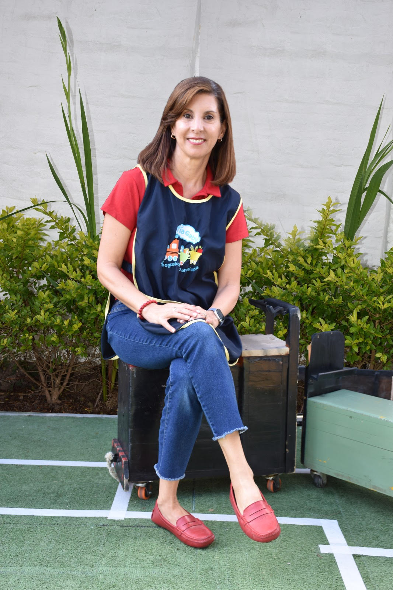
Gaby Guzmán
DIRECTORA
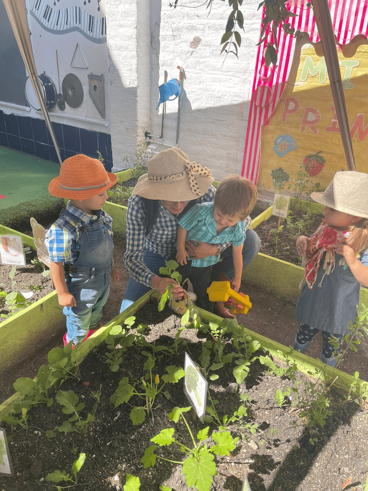
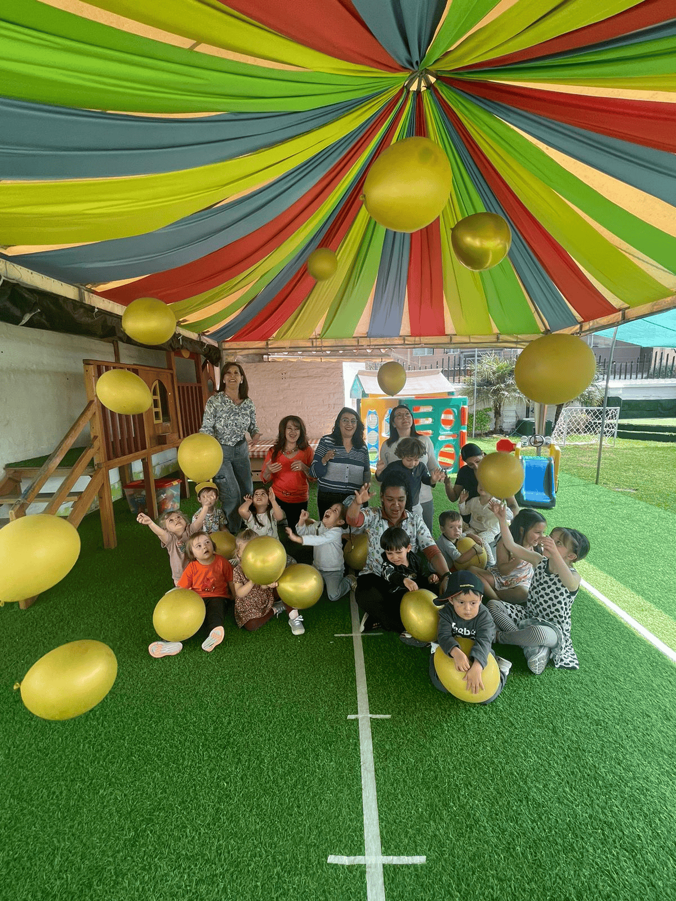
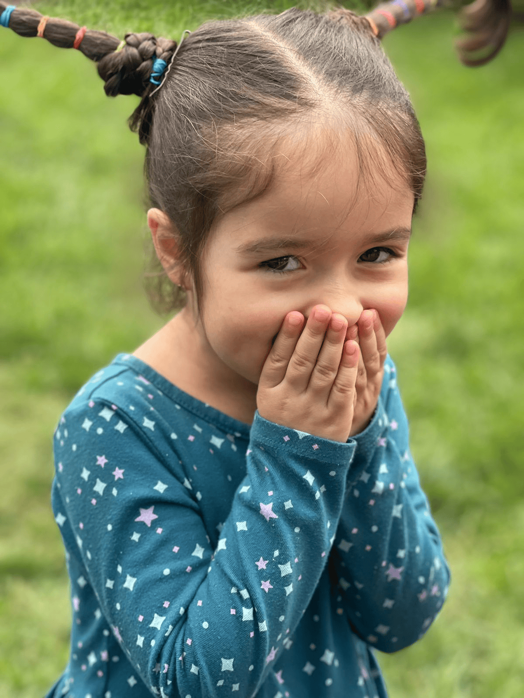
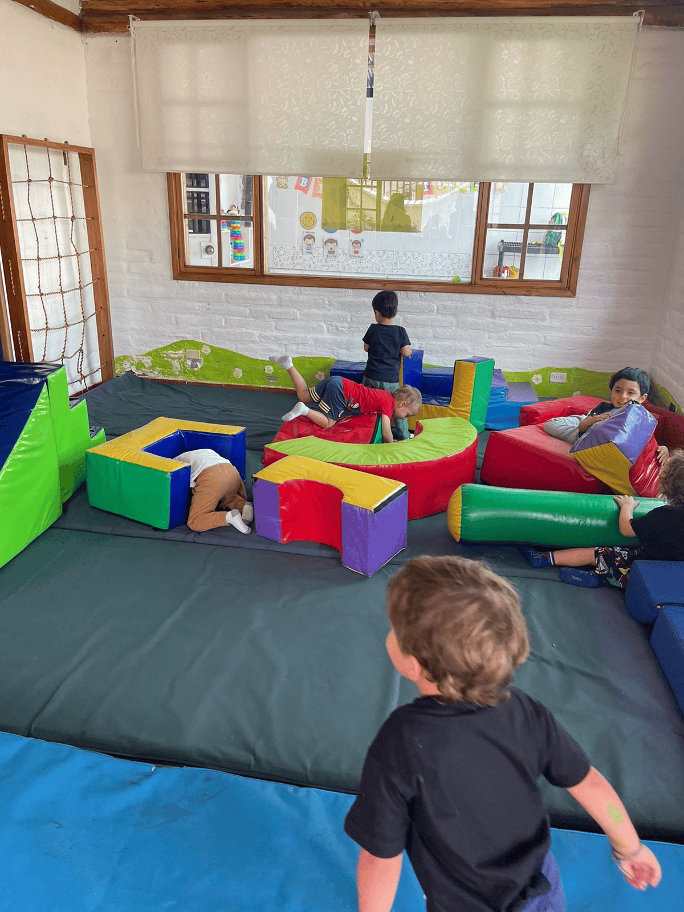
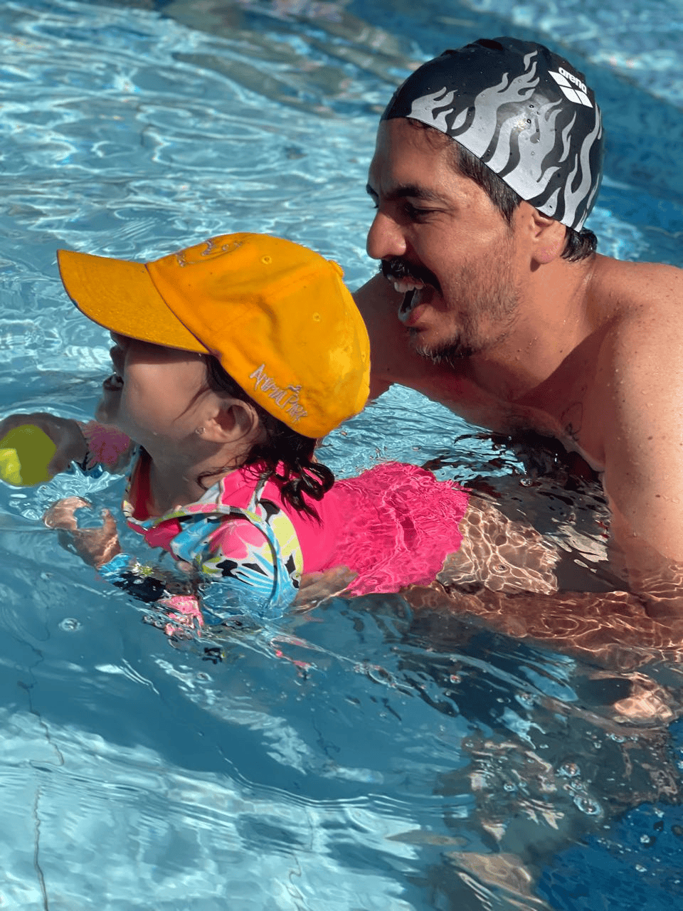
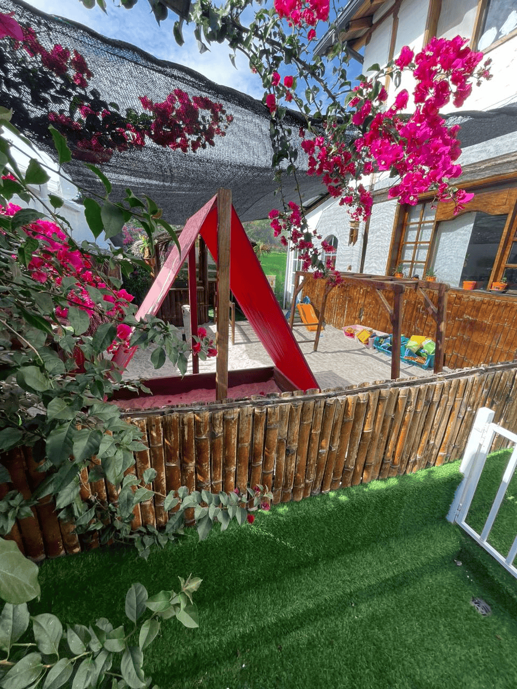
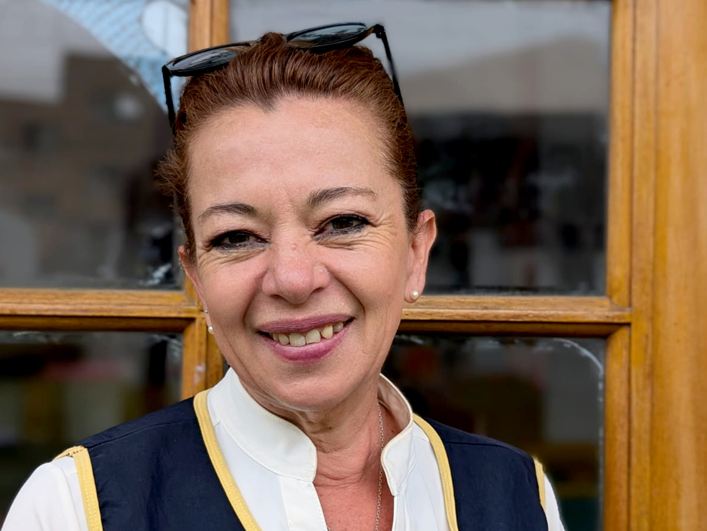
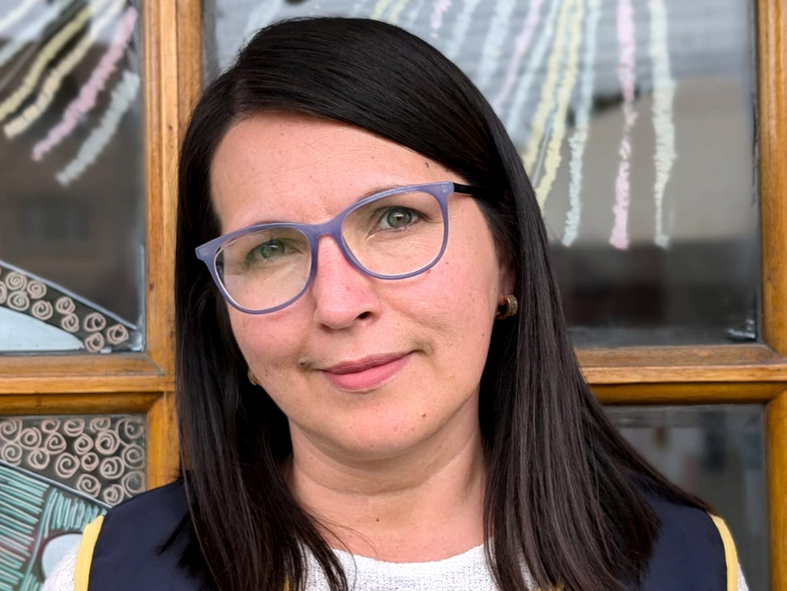
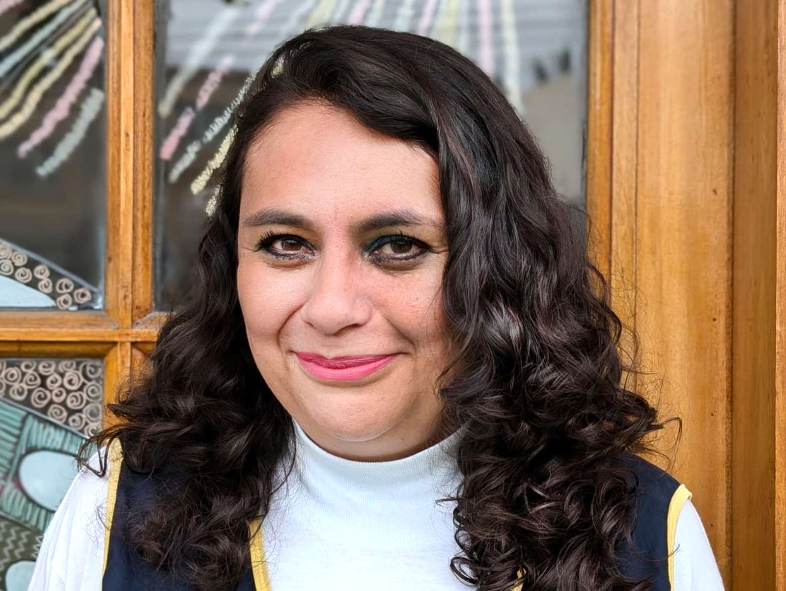
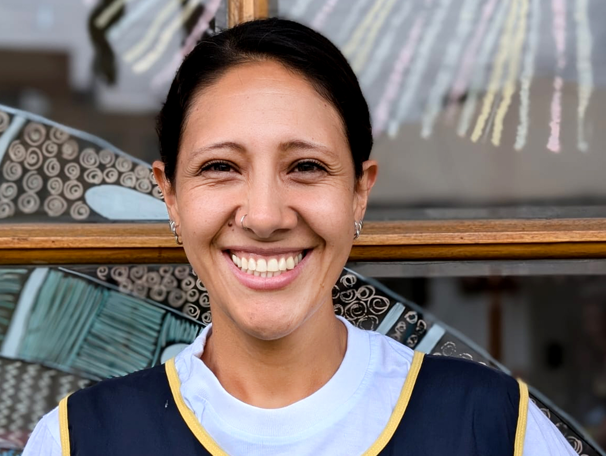
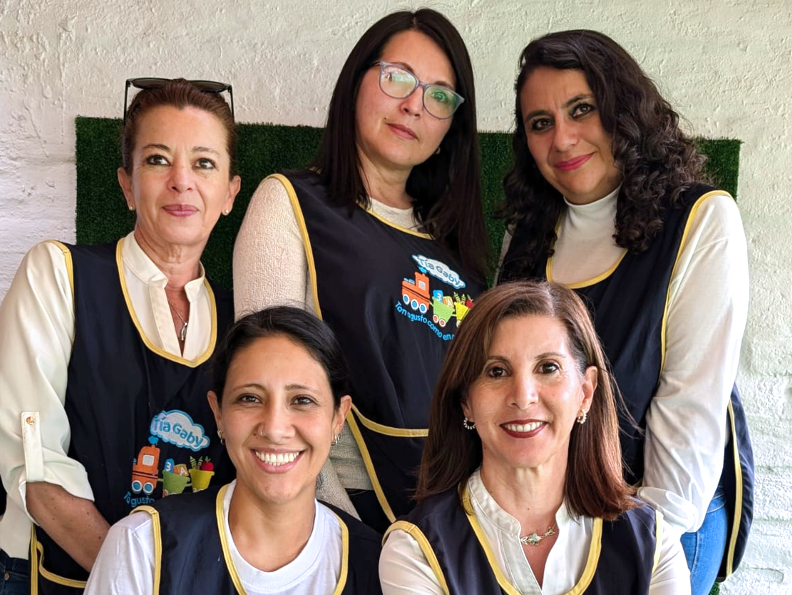